Whirlwind, two-day trip to Valencia for an academic conference. Because of the tight schedule, I was unbothered to see tourist sites, but managed to make a few.
Valencia is an otherwise plain, Spanish city. What I mean is, I don't see much difference between it and the (few) other Spanish cities that I've been to. Not to say it's bad, however. Rather, I find the general Spanish city comfortable to live in, at least for the summer. The nonchalant flair of European living, inclusive of wining in noon and dining until midnight, resonates with a lifestyle I enjoy more in adulthood. Everytime I come back, I'm reminded of being a foreigner, without the monotony of blending in in Asia. Yet, somehow, it's an anonymous sort of foreignness -- one in which the natives do not bother to look or acknowledge me. The monotony of foreignness?
The market is more spectacular in its architecture than its contents. Slightly gentrified, its vendors sell an assorted variety of foods and trinkets.
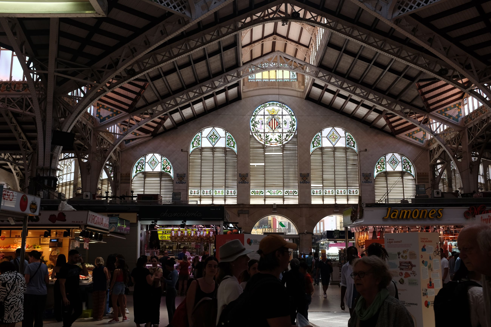 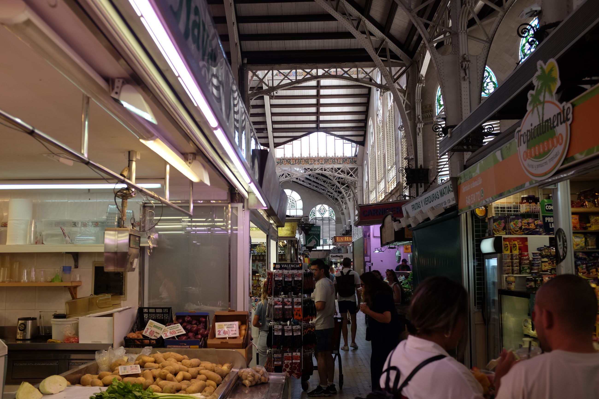 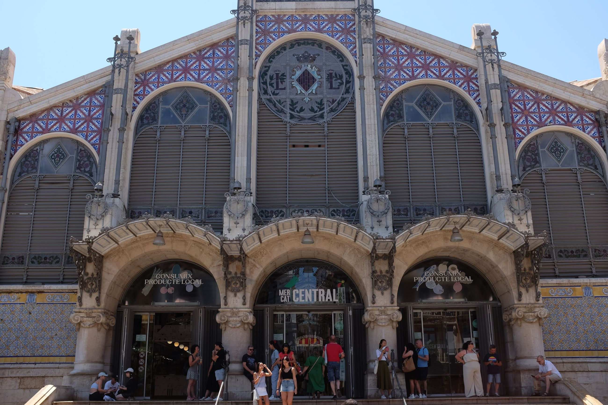
The architecture and natural planning of the Old Town are also spectacular. They are suited for pedestrianised living, complete with walkable sidewalks, fountains, and a moorish style of building. These buildings are all supposedly in famous plazas, but I can't remember their names for the life of me.
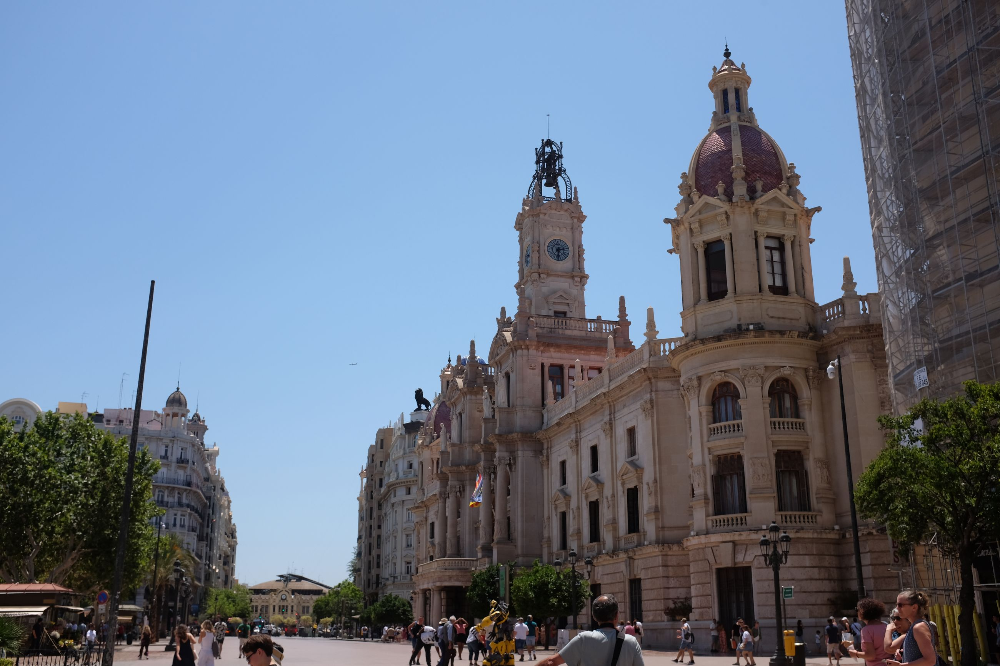 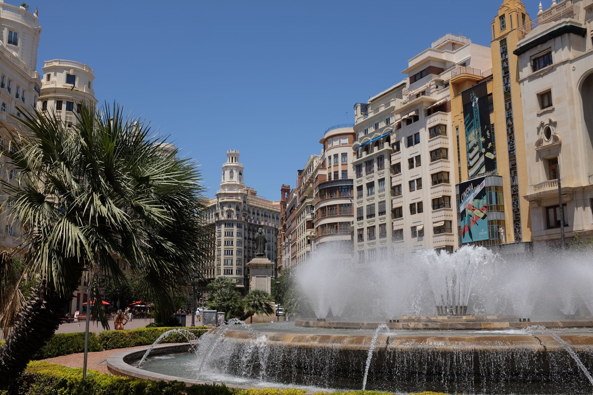 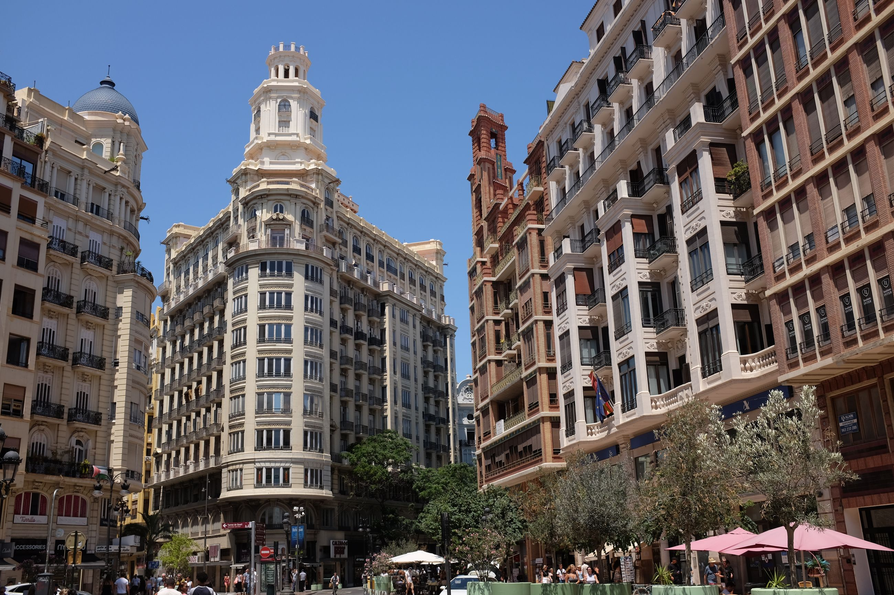 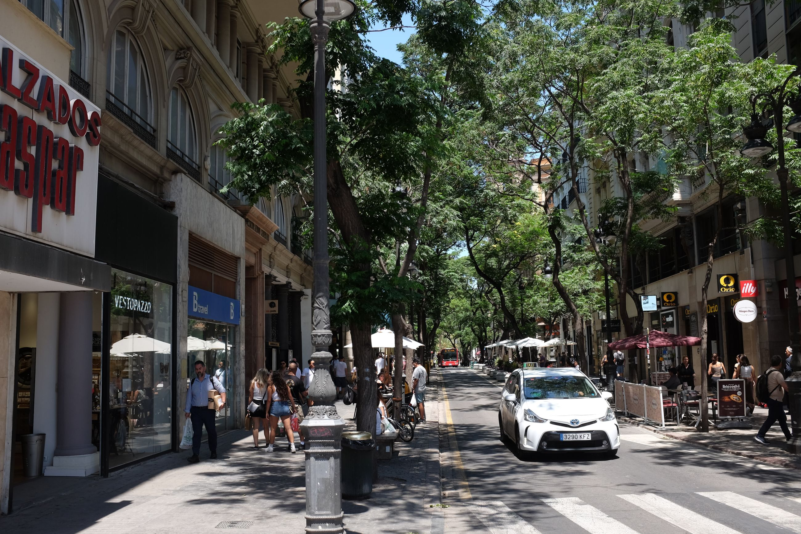 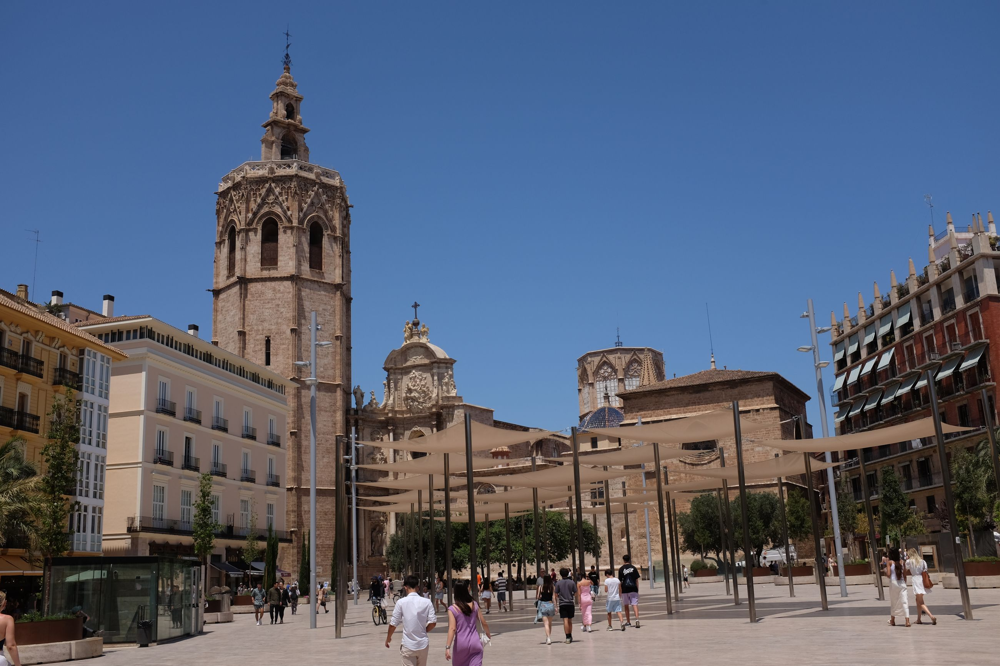
And, it would not be a trip to Europe without visiting the Cathedral.
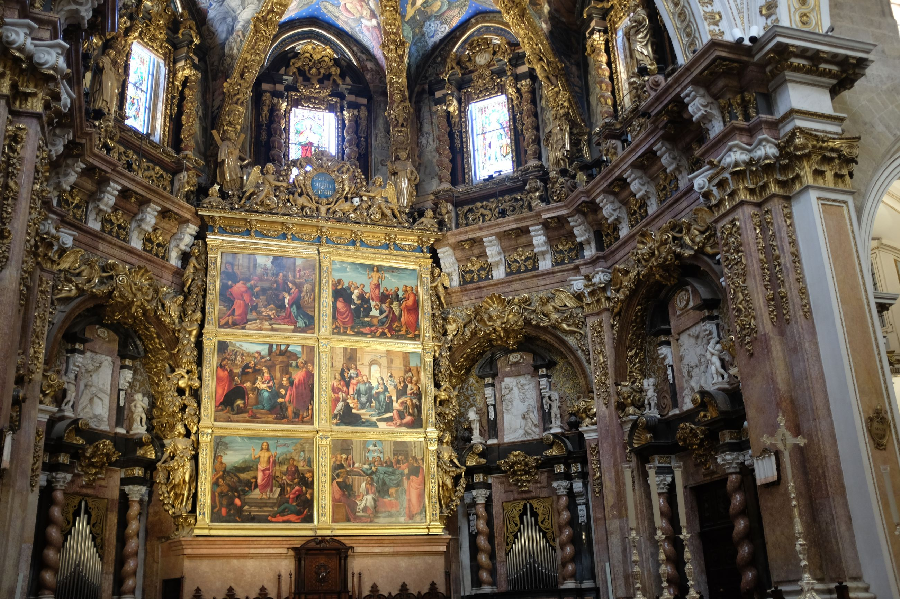
One very cosy quality to Spanish city planning is the small streets sandwiched by rows of houses, usually no more than five storeys tall. They appear in the quietest of places, and at the least unexpected turns of corners, but are always a pleasant surprise.
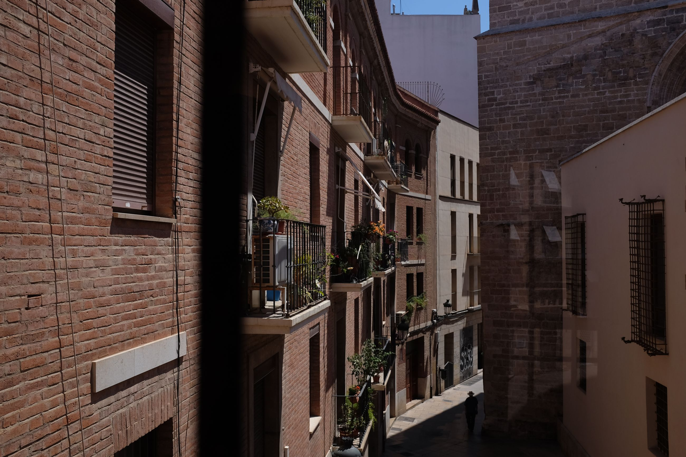 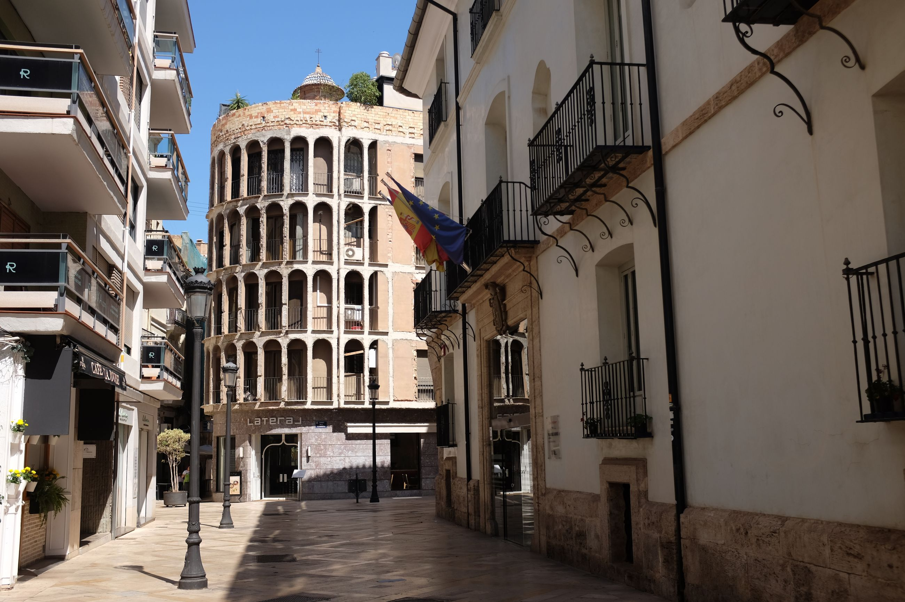
The most standout quality of Valencia is its people. One indication is their sense of the world, and their humour, based on two anecdotes. The first one is a musical joke graffitied onto a car park onto the road. Something about Wagner, and his infamous Tristan chord. This is a joke only a dollar store aficionado would make; I found it charming. The second is their worldliness. This worldliness may be a trait of, more broadly, Europe, but I came across it in Valencia. The taxi driver who took me to the airport at 0300 to catch a 0600 flight said not one word to me the entire trip. After arriving, I spoke to him in Spanish, asking to get the bags in the back. He lit up and proceeded to converse with me, asking where I was from. I said Taiwan, to which he began explaining his opinions on the Taiwan and China conflict. I did not expect that from a taxi driver in Spain's third largest city, but he was very informed. After responding to him that I would be back to Spain, but probably Madrid or Barcelona, he "Ehh'd" in comical disgust and said that those places have no heart, and that Valencia was much more lively and down to earth.
Indeed, it is.
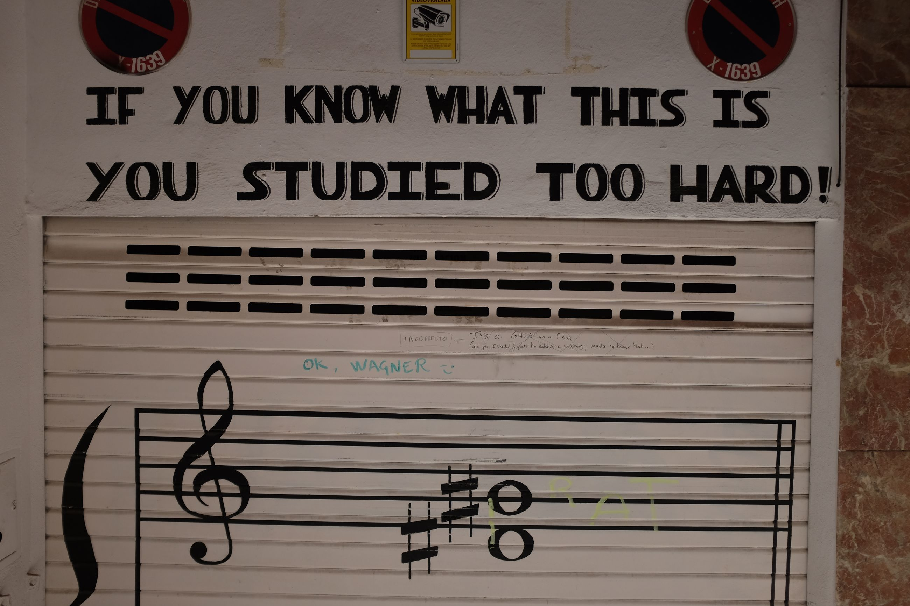